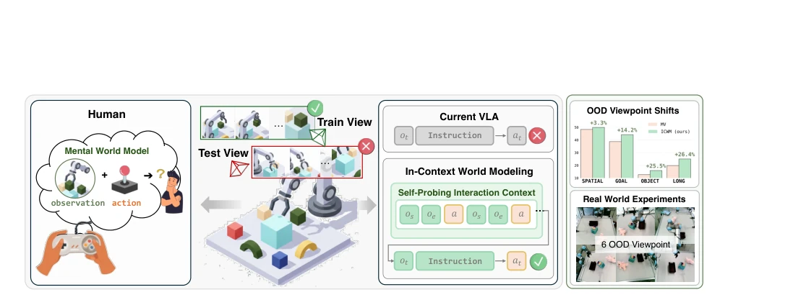
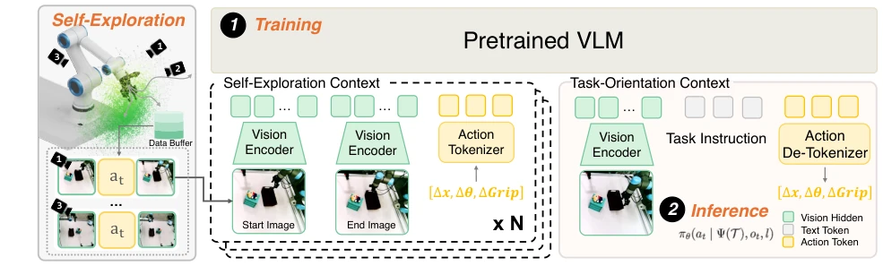
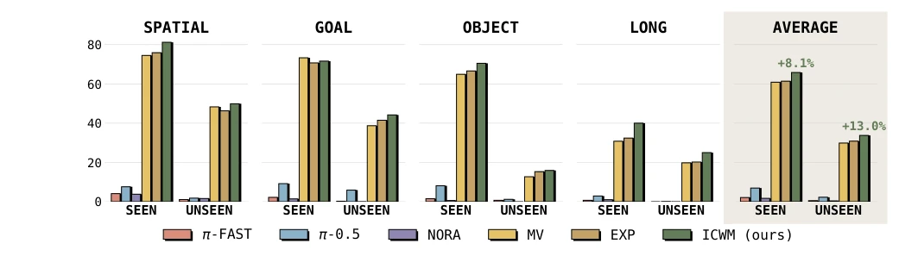
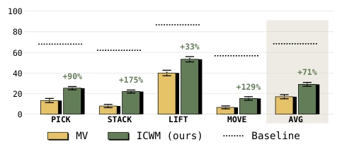
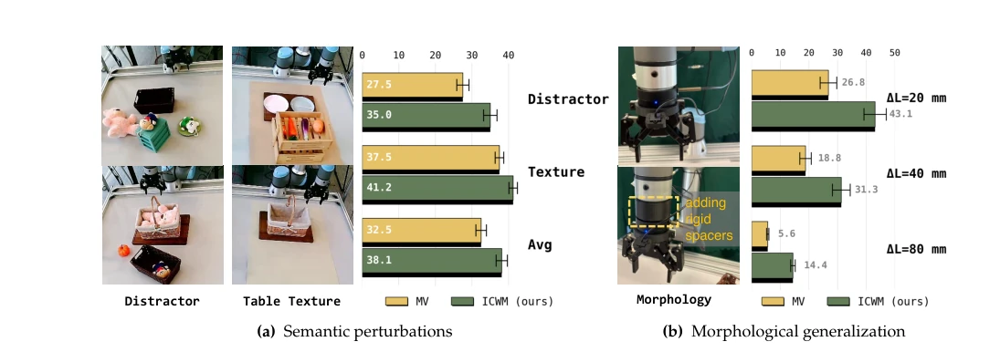
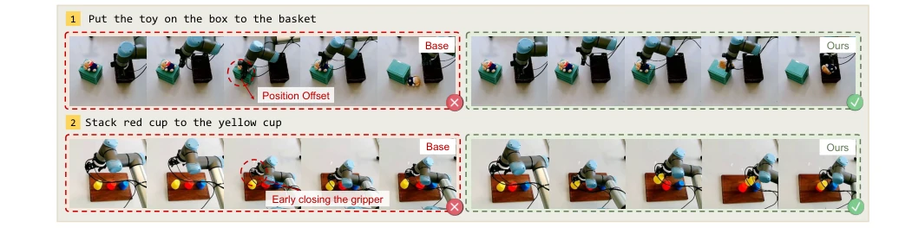
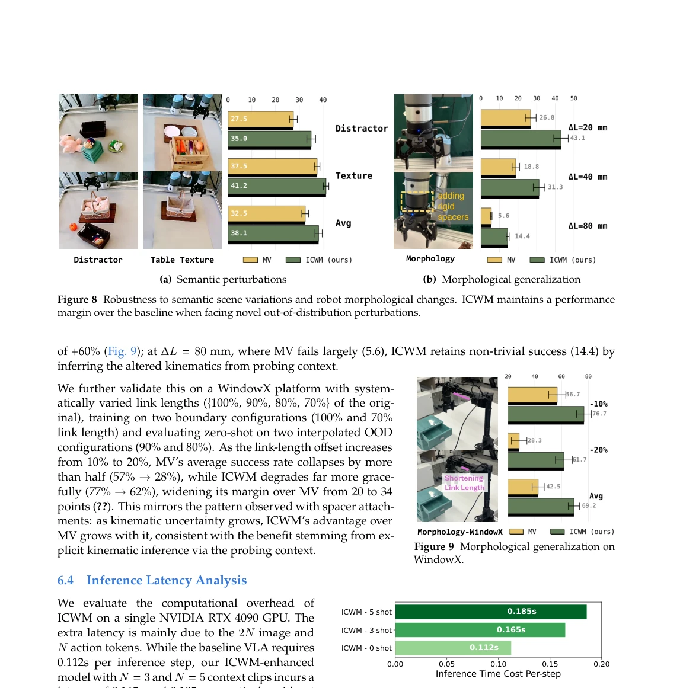
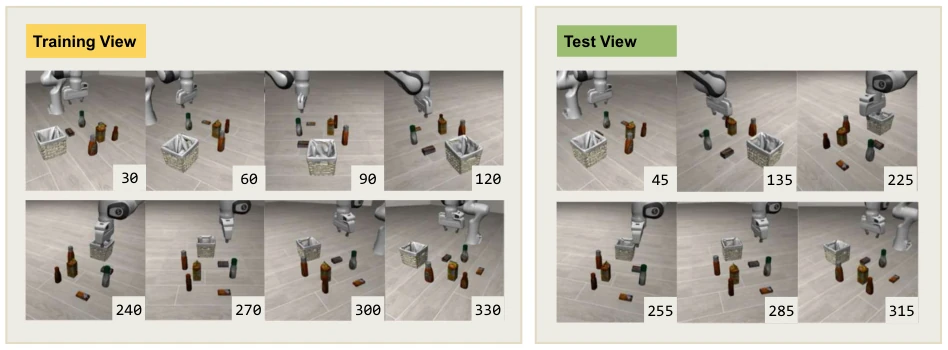
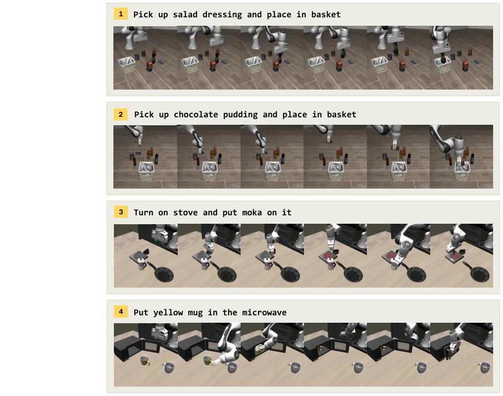
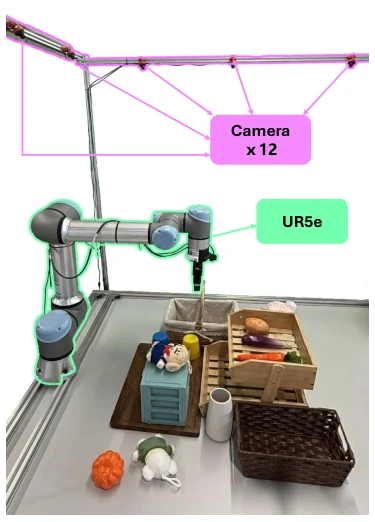

This paper delivers a lesson to VLA models that merely rote-memorize training data: data alone is insufficient; one must also know how to "slack off" for self-testing. The ICWM framework proposed by the authors essentially involves the robot "moving blindly" a few times before performing tasks, inferring the camera's position and the robotic arm's structure by observing the consequences of its random movements. This approach is far smarter and more convenient than "fine-tuning" requiring manual annotation of new scenes. However, this "probe first, then work" strategy, with the additional tens of milliseconds of latency and extra action steps in scenarios with extremely high real-time requirements, may still be a "sweet burden" causing hesitation for industrial scenarios pursuing ultimate speed. Although the paper boasts of handling various morphological changes, it essentially relies on hard-solving via the context window; for extremely complex physical interactions, how long the robustness of this implicit modeling can last remains a question mark.
Modern Vision-Language-Action (VLA) models [1-3] often perform poorly when generalizing to unseen system configurations (such as new camera viewpoints or robot morphologies). The root cause is that the standard VLA policy πθ(at | ot, l) is based only on current observations and language instructions, treating system configuration ψ (such as camera angle, robotic arm structure) as fixed constants during training, implicitly assuming the execution context remains unchanged [4]. When the deployment environment deviates from the training distribution, the model lacks a mechanism to restore the correct action-observation correspondence, leading to a sharp decline in performance. Existing solutions such as Scene-specific fine-tuning are effective, but require human intervention for each new environment, violating the goal of general robot deployment. Furthermore, existing In-Context Learning (ICL) methods [5, 6] mainly use context to specify "what task to do" (behavior norms), rather than "how the system works" (system identification), and still require demonstration data provided by humans. This paper aims to solve this problem of missing system identification, proposing a test-time adaptation scheme without parameter updates and human demonstrations.

Figure 1 In-Context World Modeling (ICWM). Standard VLA models often fail in novel system configurations due to fixed observation-action assumptions. Similar to how humans explore unfamiliar controls to build a mental world model, ICWM enables robots to autonomously infer system dynamics from self-probing interaction context.
方法Method
论文提出了In-Context World Modeling (ICWM) 框架，核心思想是将系统识别重构为上下文适应问题。整体Pipeline分为训练和推理两个阶段。训练阶段：模型在包含多种系统配置的数据集上训练，每个训练样本前都拼接了N个任务无关的交互片段（self-probing clips），这些片段由随机动作产生的视觉和动作序列组成。模型通过预测任务动作，隐式学习从交互上下文中提取系统配置ψ的映射关系。推理阶段：分为两步。首先是主动探测（Active Probing）：在任务执行前，机器人执行N次随机的、任务无关的探测动作，记录状态转移（os, ai, oe）作为上下文T。其次是上下文执行（In-Context Execution）：将探测得到的上下文T与当前观测ot和指令l一起输入模型。模型利用Transformer的注意力机制，先处理上下文T以隐式恢复当前系统配置ψ的表示，再基于此生成精确的任务动作at。该方法无需梯度更新，完全依赖预训练参数的上下文推理能力，实现了零样本的测试时自适应。
The paper proposes the In-Context World Modeling (ICWM) framework, with the core idea of reconstructing system identification as a context adaptation problem. The overall Pipeline is divided into two stages: training and inference. Training stage: The model is trained on a dataset containing various system configurations; each training sample is concatenated with N task-agnostic interaction clips (self-probing clips), which consist of visual and action sequences generated by random actions. The model implicitly learns the mapping relationship to extract system configuration ψ from the interaction context by predicting task actions. Inference stage: Divided into two steps. First is Active Probing: Before task execution, the robot executes N random, task-agnostic probing actions, recording state transitions (os, ai, oe) as context T. Second is In-Context Execution: The context T obtained from probing is input into the model along with current observation ot and instruction l. The model utilizes the Transformer's attention mechanism to first process context T to implicitly recover the representation of the current system configuration ψ, and then generate precise task actions at based on this. This method requires no gradient updates, relying entirely on the context reasoning ability of pre-trained parameters, achieving zero-shot test-time adaptation.

Figure 2 Overview of the ICWM Training and Inference Pipeline. (1) Training: The model is trained on data collected across diverse system configurations, where task-agnostic interaction clips are prepended to each training sample as context. (2) Inference: At test time, the robot first performs stochastic exploration to collect system context, which then guides the policy to generate precise actions via in-context inference.
Experiments were conducted on the LIBERO simulation benchmark and UR5e real robot platform. Main comparison baselines include Multi-View Behavior Cloning (MV), Explicit Configuration Input (EXP), and fine-tuned models such as NORA, π-FAST, etc. The evaluation metric is task success rate. Results show that under unseen viewpoints (OOD), ICWM improved success rate by 13.0% compared to the MV baseline in simulation, and even improved average success rate by 71% on the real robot, significantly alleviating performance collapse caused by viewpoint shift. Ablation studies show that removing image or action information both lead to significant performance drops, and False Context is worse than no context, confirming that the model indeed relies on interaction content for system identification. Furthermore, ICWM can also generalize to semantic scene changes (such as new objects, new textures) and robot morphology changes (such as robotic arm link length changes), proving the robustness of its implicit world modeling.

Figure 4 Success Rates (%) on LIBERO for Seen (In-Domain) and Unseen (OOD) Viewpoints.

Figure 5 Real-world evaluation on the UR5e platform. ICWM substantially outperforms the Multi-View (MV) base- line under novel viewpoints.

Figure 8 Robustness to semantic scene variations and robot morphological changes. ICWM maintains a performance margin over the baseline when facing novel out-of-distribution perturbations.
其他图片Other Figures

Figure 6 Qualitative Comparison. Without ICWM, standard policies exhibit (a) position offsets or (b) premature gripper closure due to viewpoint shifts.

Figure 10 Comparison of inference time across different set- ting.

Figure 11 Viewpoint Distribution for Training and Evaluation. We illustrate the 8 in-domain training angles and 6 out- of-domain testing angles used to benchmark viewpoint generalization.

Figure 12 Visualization of Successful Task Rollouts in Simulation. By utilizing the interaction prefix to resolve viewpoint- induced ambiguities, the agent achieves precise grasping and multi-stage execution (e.g., turning on a stove) without any environment-specific fine-tuning.

Figure 13 Real-World Experimental Platform. Our physical setup comprises a 6-DoF UR5e manipulator equipped with a parallel gripper and a comprehensive 12-camera perception array distributed at diverse elevations and azimuthal angles.